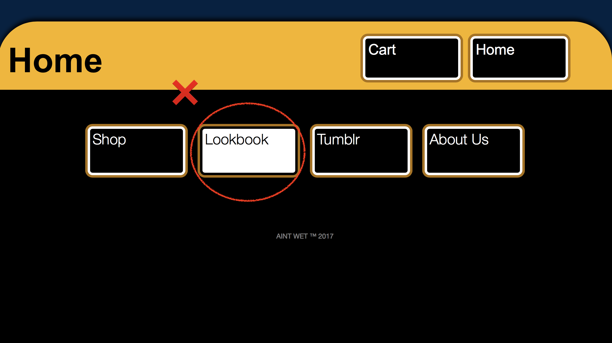

Se trata de generar tranquilidad al usuario al sentir que tiene el control. El sentido de control, que es un requisito cognitivo en el cerebro, acelera la finalización de la tarea y hace que las personas se sientan bien con lo que están usando, con lo que están haciendo y con lo que podrán lograr.
